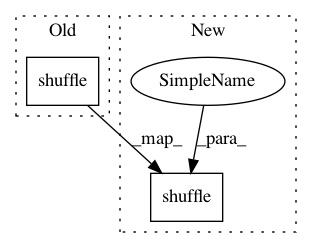

2546dbadb426502d169aed5beb5933255b6f2208,examples/tsf/utils.py,,get_batches,#,51
Before Change
s = t
if shuffle:
random.shuffle(batches)
return batches
def strip_eos(sents):
After Change
else:
order0 = range(n)
order1 = range(n)
random.shuffle(order0)
random.shuffle(order1)
x0 = [x0[i] for i in order0]
x1 = [x1[i] for i in order1]
In pattern: SUPERPATTERN
Frequency: 3
Non-data size: 2
Instances
Project Name: asyml/texar
Commit Name: 2546dbadb426502d169aed5beb5933255b6f2208
Time: 2017-12-02
Author: zichaoy@cs.cmu.edu
File Name: examples/tsf/utils.py
Class Name:
Method Name: get_batches
Project Name: asyml/texar
Commit Name: 8c71a3c24c6d11b0d99befd3f1ea92c52abe4bac
Time: 2017-11-30
Author: zichaoy@cs.cmu.edu
File Name: examples/tsf/utils.py
Class Name:
Method Name: get_batches
Project Name: NifTK/NiftyNet
Commit Name: c8b28432a637a780eed96547260722ff3dede57e
Time: 2017-10-04
Author: wenqi.li@ucl.ac.uk
File Name: niftynet/engine/sampler_selective.py
Class Name:
Method Name: rand_choice_coordinates